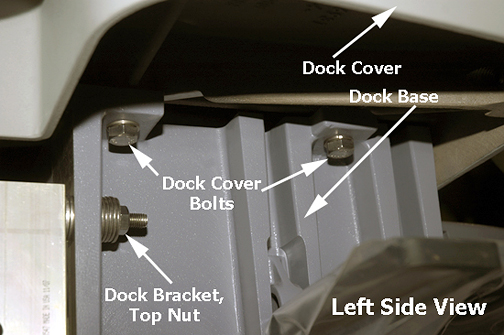
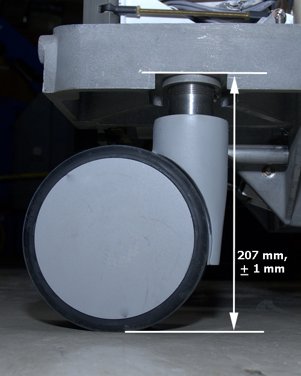
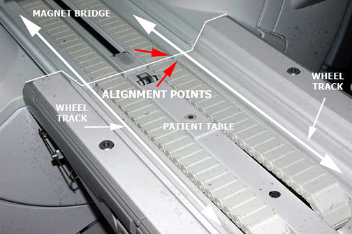

Operating Documentation
Direction 5670000, Rev# 1
Optima MR450w 1.5T Service Methods
Module Version 2.0, Version Date 8/19/08
Operating Documentation |
| Required Persons | Preliminary Reqs | Procedure | Finalization |
|---|---|---|---|
| 1 | 2 hours |
| Item | Qty | Effectivity | Part# | Manufacturer | |
|---|---|---|---|---|---|
| Non-ferrous medium Slotted Head Screwdriver | 1 | - | - | - | |
| Non-ferrous medium Phillips Head Screwdriver | 1 | - | - | - | |
| Item | Qty | Effectivity | Part# | Manufacturer |
|---|---|---|---|---|
| Marking Tape - 12” (~ 300 mm) | 1 | - | - | - |
| ||||
| STRONG MAGNETIC FIELDS! | ||||
| FERROUS HAND TOOLS CAN BECOME DANGEROUS PROJECTILES IN THE VICINITY OF THE SYSTEM MAGNET. | ||||
| Do not use any magnetic/ferrous tools or equipment inside the magnet room. |
This procedure if for the calibration of the two tables dedicated to one MR suite. You will need to adjust all four wheels on both tables.
Remove lower bellows screws from table. Remove side covers.
Drive the LPCA through the magnet to the end of the rear pedestal.
Remove the Front and Rear Base Covers from both tables.
Illustration 1: Front and Rear Base Covers

| ||||
| Ferrous material!! | ||||
At the rear of the dock, loosen the top and bottom dock brackets nuts, two on each side.
| NOTE: | Centering will take place in Step 8. |
Illustration 2: Left Side View of Dock

Center the dock using a non-magnetic plumb bob.
At the table, measure the height of all casters and make adjustments until you achieve a measurement of 207 mm. For more information, see the Leveling Patient Table procedure.
Illustration 3: Standard Height of Caster

Position the Patient Table 1-2 inches in front of the dock, being careful not to move the dock. Do NOT dock the table.
With table fully elevated, use the wheel track on the table top and the magnet bridge to visually align both. Make necessary adjustments on the two front casters by measuring to the bottom of the table interface joint. Raise or lower each caster as needed while keeping the center (between the two casters) close to the 207 mm height. Check height at bottom of table height interface joint. It should be 207 mm as well. Adjusting the high side down and the low side up by the same amount ensures the Patient Table docking mechanism will stay aligned with the dock center.
| NOTE: | Turning the caster one complete revolution raises or lowers the caster by 1 mm. You cannot make quarter or half turns on any caster because the collar has to return to its home position. |
Illustration 4: Using Alignment Points Between Table and Bridge

Illustration 5: Using a Straight Edge

Check levelness of table front to back. Adjust rear casters if needed.
If rear casters were adjusted, recheck front center between casters for correct height.
Move the table and dock left or right until the Wheel Tracks on the table top and the magnet bridge are in alignment.
Make final check with straight edge. Align end of straight edge fully across to both table and bridge wheel track. It should match.
Place a mark (piece of tape) on the floor adjacent to the side of the dock. See Illustration 6.
Repeat Steps 6-9 for the second table, and then continue with Step 15.a.
Mark the center point between the two marks.
Shift the dock to align with the center point mark.
Illustration 6: Marking the Center Point

Secure the dock by tightening the dock bracket nuts at the rear of the dock. See Illustration 2.
Complete the final lateral alignment by adjusting the front two casters if necessary. For more information, see the Leveling Patient Table
Replace Cradle Assembly on each Patient Table.
Dock each table and move cradle into magnet bore to test vertical and lateral levelness.
If necessary, perform the Table Top Height Adjustment procedure.